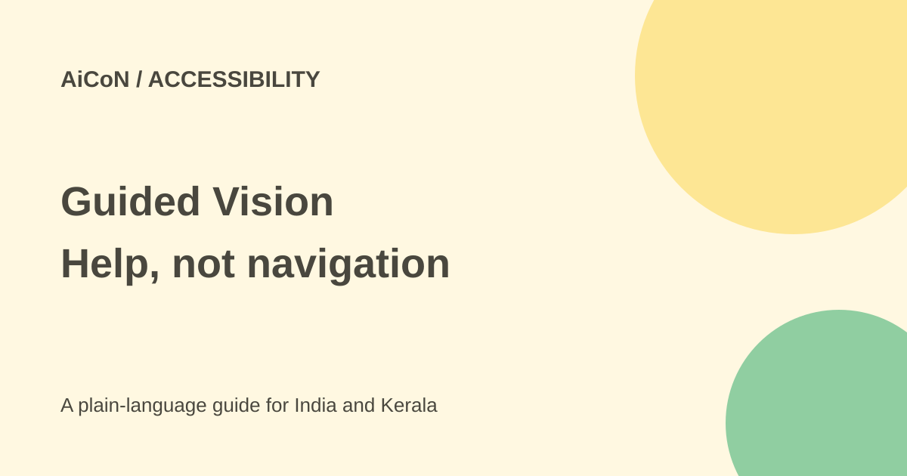

Gemini Live Guided Vision: visual help, not navigation
Guided Vision in Gemini Live gives spoken descriptions and camera-framing cues. Google built it with blind and low-vision users and launched it on compatible Android devices. It is not an obstacle detector or a substitute for mobility aids.

What does it help with?
With the camera shared, Gemini can describe a scene, help locate an object, read fine print or explain details on an appliance. Guided Vision adds spoken suggestions to reframe the camera, such as tilting down or moving it slowly sideways so the subject is visible.
These are Google's described uses, not performance results from this review. A camera can miss something outside its view, and the model can misread text or identify an object incorrectly. Use another reliable check for important information.
Who can access it?
The launch says Android 9 and later, in regions and languages where Gemini Live is supported. The current Live help also requires signing in, a supported personal or work/school account and current apps. Account access and rollout can vary.
The launch describes community testing in India, but that is not proof that every Indian account or language option already has the feature. No Malayalam output or actual Indian device was tested for this article.
How to start
- Update Gemini, the Google App and the Android system where updates are available.
- Open the Gemini mobile app profile settings and look for Use Guided Vision in Live.
- Enable that option, open Gemini Live and choose to share the camera.
- Start while stationary in a safe place with a public label or familiar object.
- Ask a short question and follow only camera-framing cues that are safe in your surroundings.
- Compare the answer with another reliable source before acting on it.
- Tap the camera control to stop sharing when done, and end the Live chat.
Google also describes Android Accessibility, Vision assistance, Guided Vision shortcuts. TalkBack users can open the three-finger-tap menu and choose Guided Vision. Menu availability can differ by supported device and update.
Do not use it for safe travel
Google explicitly says it is not a medical device, mobility aid or white-cane replacement. It is not intended for navigation, safe-travel guidance or obstacle detection. Do not use it to judge road crossings, traffic, stairs or whether a path is safe.
Even a spoken instruction to step back must be assessed against the real environment. A camera-framing suggestion is not a safety assessment of what is behind you. Keep established mobility aids and safe-travel methods.
Free or paid?
The checked Guided Vision launch does not state a separate price or a complete plan allowance. Do not assume an unlimited free entitlement or buy an AI plan solely because the feature was announced. Check the actual feature availability and terms for your account.
No rupee charge or quota was confirmed. This article does not claim that a paid subscription improves safety or makes important descriptions reliable.
Privacy and careful use
Sharing a camera can include other people, private letters, passwords or bank details in the frame. Ask permission before including somebody in a Live chat, as Google's help advises. Keep sensitive material out of view.
Camera sharing and microphone muting are different controls. The help says muting keeps a Live chat active, whereas ending it closes the session and provides a transcript. Stop the camera deliberately instead of assuming a quiet chat has ended.
What changed since the original post?
The original setup and Android 9 wording remain supported. This guide adds account and rollout caveats, separates framing cues from navigation and preserves the unverified price. No device setting was changed or accessibility outcome tested.
Frequently asked questions
Can it replace a cane?
No. Google explicitly says it cannot.
Is it available in the web app?
The current Live help says Gemini Live is not in the web app.
Will it read every label correctly?
No. Verify important text and do not rely on it for safety-critical decisions.
Sources: Official launch and safety limits · Current Gemini Live help. Checked 7 October 2026.